这是计算这个三角形面积的另一种方法。注意，三角形非常贴合地位于一个8×12的矩形中，它的面积为8×12=96。三个“零碎”的直角三角形可以扔掉。这些废弃的三角形的面积很容易计算，因为它们是直角三角形。
左边的三角形边长为8和4，所以面积为 ×8×4=16。
×8×4=16。
右上角的三角形边长为8和5，面积为×8×5=20。
而下面的边长为12和3，所以它的面积是×12 ×3=18。
三个三角形的总面积是18+20+16=54。我们用矩形的面积减去这个面积96–54=42。
三角形是由连接三个点的三条线段组成的几何图形。在本章中，我们将探索这些不起眼的形状所具有的一些众所周知的特征，并揭开它们的一些奥秘。让我们从两个熟悉的三角形公式开始：角度之和与面积。
关于三角形我们最熟悉的事实，或许是当我们测量一个三角形的三个内角时，会发现它们的和是180°。
我们怎么知道这是确定无误的？我们可不是通过从纸上剪下很多三角形，然后用量角器来检验它们的角度的！让我们看看证明的过程。
选择一个三角形——任意一个三角形——并将它的三个角命名为A，B和C。假设这些角的度数分别是x°，y°和z°。我们想证明x°+y°+z°=180°。[1]
（在你的脑中或纸上）画出与线段AC平行并过B点的线L，如下所示：
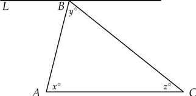
接下来，我们延长线段AB和BC，使它们穿过线L。这样会在L的另一侧创建三个角。
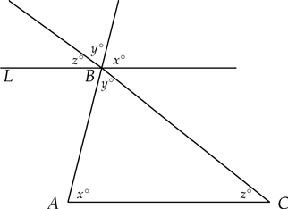
注意，我们创建的三个新的角合在一起，恰好填满了线L的一侧。这表明这三个角之和为180°。在图中，我们将新形成的角标记为x°，y°和z°，因为它们的大小与三角形的三个内角相同。为什么？
当两条平行线被第三条直线所截时，截线与平行线形成的夹角相等。当两条线相交时，所形成的对顶角相等。参照下图。
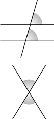
现在重新回到这三个新角。因为AC和L是平行线，所以切线AB形成的夹角相等——都是x°。同样，BC也截出两个相等的角——都是z°。最后，AB和BC两条线在B点相交，它们形成的两个角相等——都是y°。
概括如下：
●三个新的角正好覆盖线L的一侧，所以它们相加为180°。
●三个新的角与三角形的三个内角大小相等。
因此我们可以得出结论：x+y+z=180。
无数的学生都记得三角形的面积等于底乘以高的一半。回想一下，“底”是三角形的一个边，“高”是顶点到底边的距离。
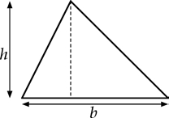
如果底的长度是b，高是h，那么三角形的面积是
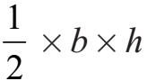
。熟悉的公式！但是怎么证明呢？有一个比公式本身更有趣的可爱的解释。
复制出我们想求出面积的三角形，翻转它，并与原来的三角形对齐，形成一个下面这样的平行四边形：
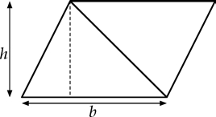
我们展示了如何从边长为a和b的矩形面积为a×b的事实中导出三角形面积公式=1/2bh。
因为这个平行四边形由两个相同的三角形组成，所以它的面积是最初三角形面积的两倍。
现在我们沿虚线剪掉一条边外面的小三角形将平行四边形“摆平”。将那个小三角形贴在平行四边形的另一边，就像下面这样：
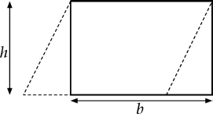
结果出现了一个边长为b和h的矩形，其面积是b×h。由于这个矩形包含两个相同的三角形，所以一个三角形的面积是
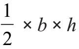
。如果给定一个物理三角形，比如用木头制成的三角形，我们很容易使用卷尺测量某一个边长。但是测量高度并不方便。我们可以把卷尺放在一个顶点，但是必须估测出对边对应的点的位置。
所以假设我们知道三角形三边的长度。我们如何计算它的面积？是否难度很大？不，只需要一个英雄的帮助——他是生活在2000年前的亚历山大港的希罗（Hero）。
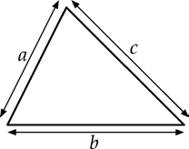
假设一个三角形的边长是a，b和c，如图所示。
为了计算它的面积，希罗告诉我们先把各边的长度相加再除以2。结果为s：
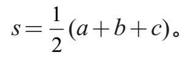
下一步是把四个数字a，b，c和s代入公式来求面积：
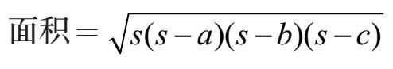
例如，如果三角形的边长为4，5和7，则11
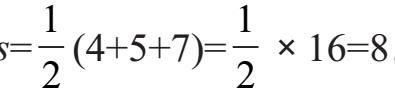
得：得：
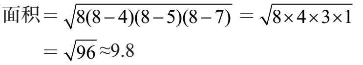
下面是希罗公式的替代版本，我们不需要首先计算出s的值：
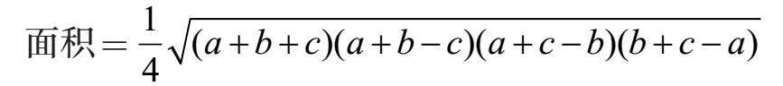
回到边长为4，5和7的三角形，计算过程如下：
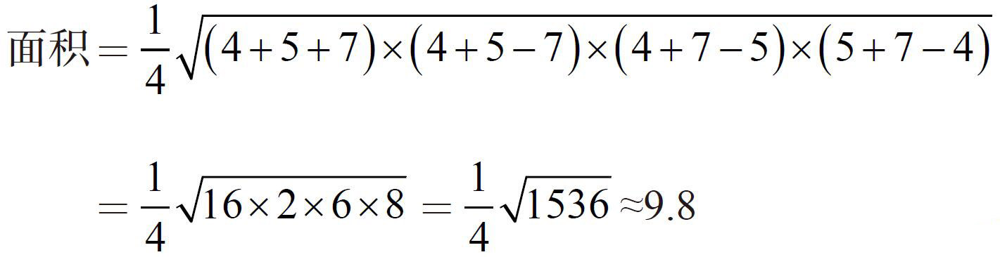
还有几个公式可以计算三角形的面积，但是让我们用个人最喜欢的方法来讨论这个部分。该公式适用于绘制在方格纸上，三个角位于网格点上的三角形，如下图所示。
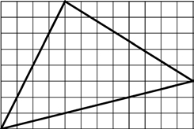
假设网格中的方格大小为1×1，我们可以通过计算完全包含在三角形内部的单元格的数量，然后通过被三角形各边截过的格子计算出剩余面积以计算出三角形的面积。那将会非常复杂。
这是计算这个三角形面积的另一种方法。注意，三角形非常贴合地位于一个8×12的矩形中，它的面积为8×12=96。三个“零碎”的直角三角形可以扔掉。这些废弃的三角形的面积很容易计算，因为它们是直角三角形。
左边的三角形边长为8和4，所以面积为×8×4=16。
右上角的三角形边长为8和5，面积为×8×5=20。
而下面的边长为12和3，所以它的面积是×12 ×3=18。
三个三角形的总面积是18+20+16=54。我们用矩形的面积减去这个面积96–54=42。
皮克定理（Pick's Theorem）提供了一个更简洁的方法。与计算小方格数目不同的是，我们计算格点。首先我们计算三角形内部的格点的数量，命名为数字I。然后我们计算三角形边线上的点的数量，命名为数字B。
皮克定理告诉我们：
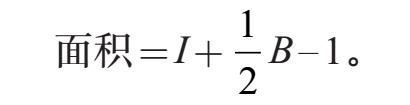
我们在图中绘制了三角形，以便计算点数。在三角形内部包含了I=38个格点，在边线上有B=10个格点（包括顶点）。因此，依据皮克定理得：
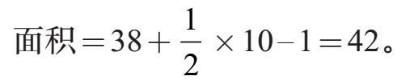
在这个部分的结尾留给你一道题。假设我们希望求出绘制在方格纸上的四边形的面积，且四边形的四个顶点位于格点上。如果四边形内部包含I个格点，边线（包括四个顶点）包含B个格点，那么四边形的面积是多少？答案在[c]。
现在思考五边形、六边形的面积问题。
三角形的“中心”是什么意思？三角形中心的定义方式不止一种，每一种都有其独特的魅力。让我们从一个叫作三角形重心（centroid）的点开始。在三角形中，画出从每个顶点到对边中点的线段。令人惊讶的是，这三条线段相交于一点，这个点被称为重心。如下图所示：
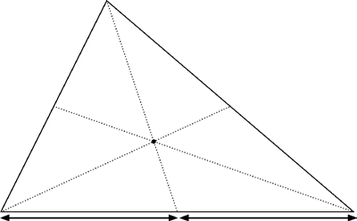
重心还有另外一个有趣的特性，它可以是质心：如果三角形是由一些坚固的材料制成的（比如说薄金属片），质心就是三角形平衡的点。当然，平衡是脆弱的，所以测量必须是精准的。
我们不需要画出中线，让我们画出从三角形的顶点到对边的尽可能短的线段。这样每条线段会垂直于对边。令人高兴的是，这三条线段也在一个被称为垂心（orthocenter）的点上相交。如下图：
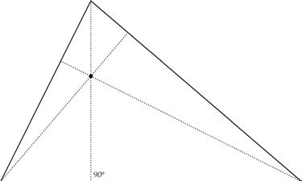
接下来是：角平分线。我们从三角形的顶点画出三条线段，但是这次所画的线段要精准地将角平分。也就是说，线段将角分成两个相等的部分。如同前面的例子一样，这三条线段也交于一点，即内心（incenter）。
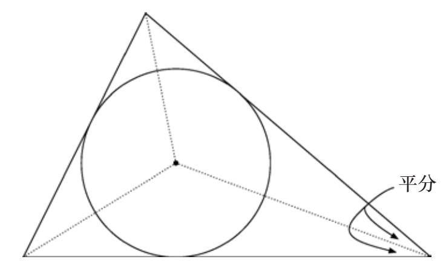
之所以被称作内心是因为它是三角形内最大圆的圆心，它被称为内切圆（inscribedcircle）。
我们的下一个例子不是从三角形的三个角画出三条线段，而是从各边中点画出三条与之垂直的线段。它们被称为垂直平分线（perpendicular bisectors），因为它们将边分成相等的两部分并垂直于边。令人高兴的是，这三条线也相交于一点，被称为三角形的外心（circumcenter）。这个点也是包围这个三角形的最小圆——外接圆——的圆心。
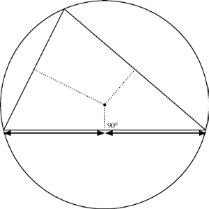
如果一个三角形是等边三角形（所有边长相等），这四个不同的中心（重心、垂心、内心、外心）合于一心。但一般而言，它们是不同的。下图显示了（除去了杂乱的各种线段）四个三角形中心所在的四个位置。
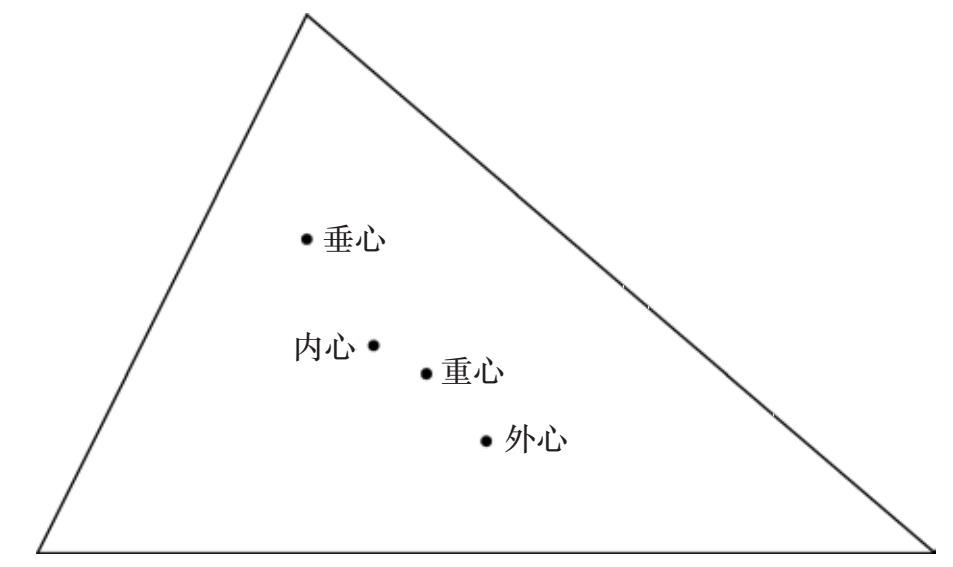
有趣的是，这四个“中心”的一部分可能会落于三角形的外部！你能弄清楚是哪一个吗？答案见后面。
这一次我们不画角平分线，而是画角的三等分线（trisectors）。也就是说，我们从每个顶点画出将角分成三个相等部分的两条线段。总共有六条线段（每个顶点有两条）。当然，它们不会相交于一点，但是每相邻的（不在同一个角的）两条三等分线的交点构成了一个等边三角形的顶点。
令人惊叹的莫雷定理（Morley's Theorem）告诉我们，这个小三角形总是一个等边三角形！
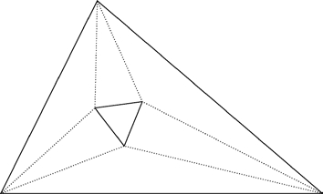
这里有另外一种方法可以找到暗藏在任何给定三角形周围的等边三角形。随意选择一个三角形（下图中粗线部分），并在它的每条边上添加一个等边三角形（细线部分）。我们用点标出每个扩展部分的中心，如下所示：
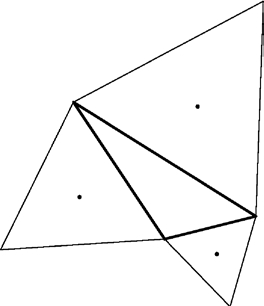
接下来，将这三个点连起来——瞧——新的三角形是一个等边三角形（下图中虚线部分）：
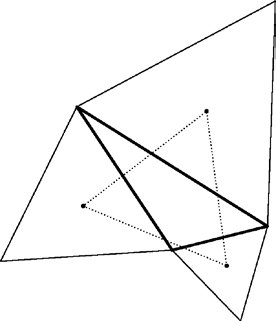
应用于四边形的皮克定理[c]。在网格上绘制一个四边形，并画出它的一条对角线，这样我们就得到了两个三角形，如下图所示。
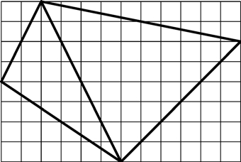
我们可以使用皮克定理计算出每个三角形的面积，然后将这两个面积相加。对于这两个三角形（左侧的称为L，右侧的称为R），已知
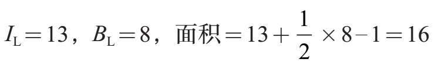
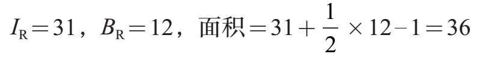
因此四边形的面积为16+36=52。
令人高兴的是，皮克定理同样适用于四边形！原因如下。
不用重新计算格点，让我们利用已经完成的工作。
上页左侧三角形内部有13个点，右侧内部有31个点。但要注意的是，在四边形内部的对角线上有3个点；我们也需要将它们计算在内。得：IQ=31+13+3=47。
对于四边形的边线，我们知道左侧三角形边线上有8个格点，右侧边线上有12个格点，总共有20个。但是这出现了重复计算。对角线上的3个内部格点不应该被计算在内，并且每个都被数过两次，因此我们需要减去6。对角线的两个端点也都被计算了两次，所以我们需要减去2。因此BQ=20–6–2=12。
我们现在计算：
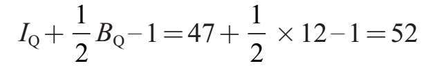
这是——令人惊讶的——正确答案！这是怎么回事？
两个三角形L和R的面积相加：
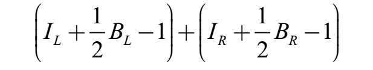
得到四边形的面积。我们来重写这个公式：
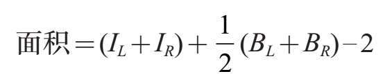
IL+IR遗漏了四边形的一些内部格点。但BL+BR重复计算了边线上的格点。对角线上的内部格点被计算了两次，但是它们确实属于IQ项（除以2以进行抵消）。对角线的两个端点在计算边线格点时被重复计算。除以2解决了问题，再减去2（而不是1）令一切变得正确无误！
事实上，皮克定理适用于任何顶点落在格点上的多边形。
落于三角形外部的三角形中心。如果一个三角形是钝角三角形（其中一个角大于90度），则外心和垂心会位于三角形的外部。如下图所示。
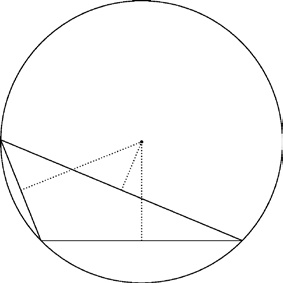
找到一个钝角三角形的垂心有点困难。解决的思路是延长三角形的边。以下一页图中绘制的三角形ABC为例。
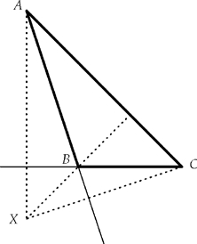
我们通过绘制三条线来定位垂心：（1）过顶点A垂直于BC（我们必须延长）的直线，（2）过顶点B垂直于AC的直线，以及（3）过顶点C垂直于AB的直线（也延长）。这三条线相交于X点，即垂心。